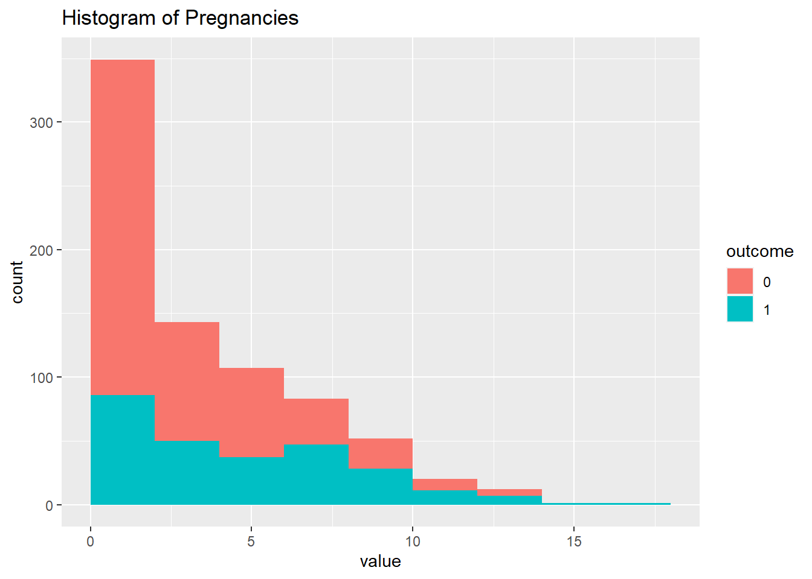
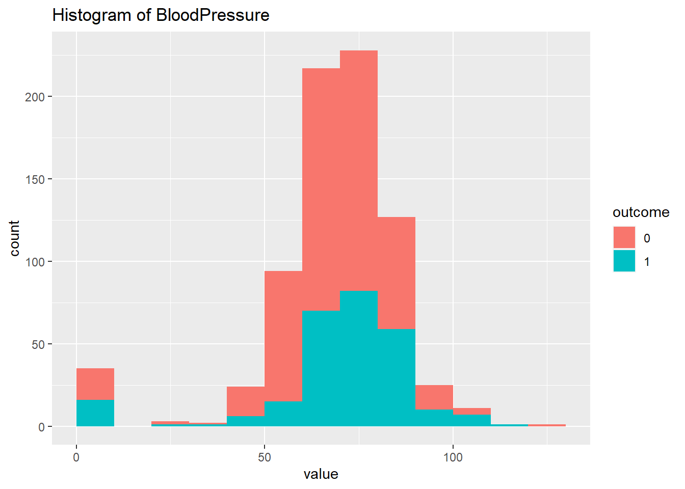
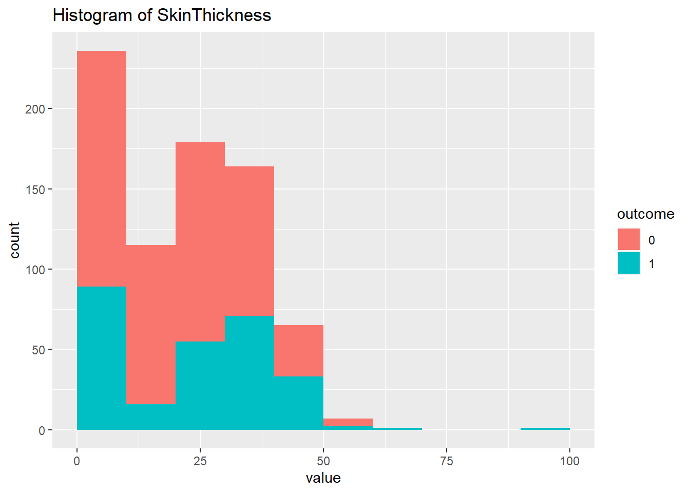
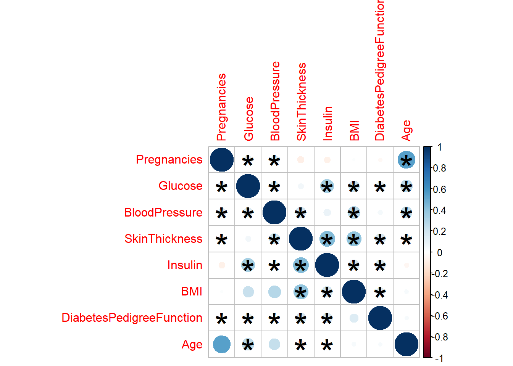
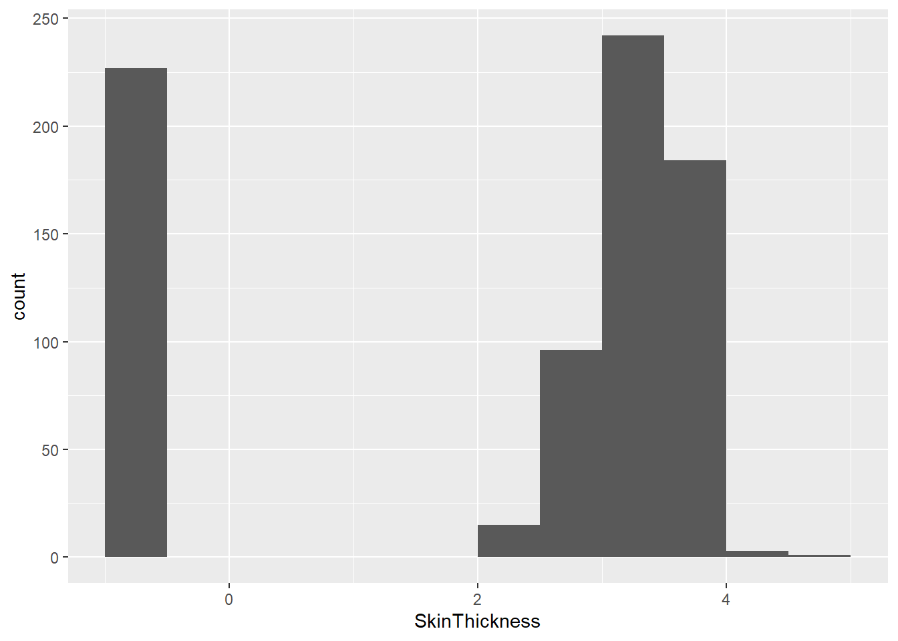

Este sería un ejemplo de examen El siguiente conjunto de datos, consuste en predecir a pacientes basandonos en datos clínicos, si puede padecer diabetes o no.
Antes de cualquier método de clasificación, regresión o lo que sea, necesitamos explorar los datos.
Esto supone exámenes estadísticos inferenciales univariantes, bivariantes y multivariantes.
Pima Indians Diabetes Database
This dataset is originally from the National Institute of Diabetes and Digestive and Kidney Diseases. The objective of the dataset is to diagnostically predict whether or not a patient has diabetes, based on certain diagnostic measurements included in the dataset. Several constraints were placed on the selection of these instances from a larger database. In particular, all patients here are females at least 21 years old of Pima Indian heritage.
Cargamos librerias
library(ggplot2)library(dplyr)
Attaching package: 'dplyr'
The following objects are masked from 'package:stats':
filter, lag
The following objects are masked from 'package:base':
intersect, setdiff, setequal, union
library(caret)
Loading required package: lattice
library(e1071)library(ggstatsplot)
You can cite this package as:
Patil, I. (2021). Visualizations with statistical details: The 'ggstatsplot' approach.
Journal of Open Source Software, 6(61), 3167, doi:10.21105/joss.03167
Cargamos los datos
datos <-read.csv("./datos/diabetes.csv") ###El comando nos permite leer los datos, para esot debemos poner la ruta especificahead(datos)
Si echamos una búsqueda rápida en google, observamos que el pedigree, es eso, la historia familiar de diabetes. Por lo tanto, aquí podríamso hacer varias cosas ! Entre ellas, regresar los datos a dicha función, o clasificar según esta variable, considerarla o no considerarla.
Para empezar vamos a considerarla para ver la clasificación del modelo knn y bayes.
Miramos las clases de los datos
str(datos) ###Nos permite ver los datos que cargamos
La única variable que debemos de cambiar es Outcome a factor. Donde 1 es diebetes, y 0 es no diabetes
datos$Outcome <-as.factor(datos$Outcome) ### Convertimos la columna outcome en un data frame
Análisis estadístico preliminar
dim(datos) ### Nos permite ver las dimenciones de los datos, es decir las filas y columnas
[1] 768 9
Tenemos 768 filas y 9 columnas. Analicemos primero dos a dos las variables una por una
Histogramas
l.plots <-vector("list",length =ncol(datos)-1) ###Creamos un vector n1 <-ncol(datos) -1### Restamos una columnafor(j in1:n1){ h <-hist(datos[,j],plot = F) datos.tmp <-data.frame(value=datos[,j],outcome=datos$Outcome) p1 <-ggplot(datos.tmp,aes(value,fill=outcome))+geom_histogram(breaks=h$breaks) +ggtitle(paste("Histogram of", colnames(datos)[j])) l.plots[[j]] <- p1} ### Recorre las columnas de un objeto de datos y crea un histograma para cada columna### Los gráficos resultantes se almacenan en una lista llamada "l.plots", donde cada elemento de la lista contiene el gráfico correspondiente a una columna específica del objeto de datos.
l.plots
[[1]]

[[2]]
[[3]]

[[4]]

[[5]]
[[6]]
[[7]]
[[8]]
En lo particular la variable del pedigree se me hace importante, entonces vamos a realizar gráficos de dispersión
En realidad, una buena práctica es correlacionar todas contra todas…
ggscatterstats(datos,BMI,DiabetesPedigreeFunction) ### Creamos un grafico de disperción
Registered S3 method overwritten by 'ggside':
method from
+.gg ggplot2
`stat_bin()` using `bins = 30`. Pick better value with `binwidth`.
`stat_bin()` using `bins = 30`. Pick better value with `binwidth`.
Sin embargo, esto puede ser un proceso tedioso… imaginad hacer 16 gráficas ! podemos condersarlo todo
obj.cor <- psych::corr.test(datos[,1:n1]) ### Se hace un analisis de correlaciónp.values <- obj.cor$p ### Se extraen valoresp.values[upper.tri(p.values)] <- obj.cor$p.adj ### SE reemplazan los valores por encima de la diagonal por valores preajustadosp.values[lower.tri(p.values)] <- obj.cor$p.adj ### SE reemplazan los valores por debajo de la diagonal por valores preajustadosdiag(p.values) <-1corrplot::corrplot(corr = obj.cor$r,p.mat = p.values,sig.level =0.05,insig ="label_sig") ### Crea un gráfico de correlación

Ahora podemos proceder a hacer algo similar, con una serie de comparaciones dos a dos sobre las medias o medianas, sobre cada variable y la variable de interés.
Primero debemos aplicar una regresión linear con variable dependiente cada variable numérica y por la categórica. Es decir un t.test pero con el fin de ver los residuos, para ver la normalidad de éstos
$Pregnancies
Shapiro-Wilk normality test
data: newX[, i]
W = 0.9389, p-value < 2.2e-16
$Glucose
Shapiro-Wilk normality test
data: newX[, i]
W = 0.97511, p-value = 3.726e-10
$BloodPressure
Shapiro-Wilk normality test
data: newX[, i]
W = 0.81468, p-value < 2.2e-16
$SkinThickness
Shapiro-Wilk normality test
data: newX[, i]
W = 0.92004, p-value < 2.2e-16
$Insulin
Shapiro-Wilk normality test
data: newX[, i]
W = 0.77776, p-value < 2.2e-16
$BMI
Shapiro-Wilk normality test
data: newX[, i]
W = 0.94359, p-value < 2.2e-16
$DiabetesPedigreeFunction
Shapiro-Wilk normality test
data: newX[, i]
W = 0.84939, p-value < 2.2e-16
$Age
Shapiro-Wilk normality test
data: newX[, i]
W = 0.88114, p-value < 2.2e-16
### Este codigo se utiliza para realizar pruebas de normalidad en los residuos de los modelos de regresión lineal entre cada columna de un conjunto de datos y una variable de resultado
Todas las variables son no normales, tal como vemos en los histogramas.
ggbetweenstats(datos,Outcome,Pregnancies,type ="nonparametric") ### para realizar pruebas estadísticas entre grupos definidos por una variable categórica y una variable numérica
Pregnancies Glucose BloodPressure SkinThickness
Min. : 0.000 Min. : 0.0 Min. : 0.00 Min. : 0.00
1st Qu.: 1.000 1st Qu.: 99.0 1st Qu.: 62.00 1st Qu.: 0.00
Median : 3.000 Median :117.0 Median : 72.00 Median :23.00
Mean : 3.845 Mean :120.9 Mean : 69.11 Mean :20.54
3rd Qu.: 6.000 3rd Qu.:140.2 3rd Qu.: 80.00 3rd Qu.:32.00
Max. :17.000 Max. :199.0 Max. :122.00 Max. :99.00
Insulin BMI DiabetesPedigreeFunction Age
Min. : 0.0 Min. : 0.00 Min. :0.0780 Min. :21.00
1st Qu.: 0.0 1st Qu.:27.30 1st Qu.:0.2437 1st Qu.:24.00
Median : 30.5 Median :32.00 Median :0.3725 Median :29.00
Mean : 79.8 Mean :31.99 Mean :0.4719 Mean :33.24
3rd Qu.:127.2 3rd Qu.:36.60 3rd Qu.:0.6262 3rd Qu.:41.00
Max. :846.0 Max. :67.10 Max. :2.4200 Max. :81.00
Outcome
0:500
1:268
pcx <-prcomp(datos[,1:n1],scale. = F) ## escalamos por la variablidad de los datosplotpca <-bind_cols(pcx$x,outcome=datos$Outcome)ggplot(plotpca,aes(PC1,PC2,color=outcome))+geom_point()
### Se utiliza para realizar un análisis de componentes principales (PCA, por sus siglas en inglés) y visualizar los resultados en un gráfico de dispersión
Ahora vamos a ver si haciendo unas transformaciones esto cambia. Pero antes debemos de ver las variables sospechosas…
Pero de igual manera podemos escalar a ver si hay algun cambio…
summary(datos)
Pregnancies Glucose BloodPressure SkinThickness
Min. : 0.000 Min. : 0.0 Min. : 0.00 Min. : 0.00
1st Qu.: 1.000 1st Qu.: 99.0 1st Qu.: 62.00 1st Qu.: 0.00
Median : 3.000 Median :117.0 Median : 72.00 Median :23.00
Mean : 3.845 Mean :120.9 Mean : 69.11 Mean :20.54
3rd Qu.: 6.000 3rd Qu.:140.2 3rd Qu.: 80.00 3rd Qu.:32.00
Max. :17.000 Max. :199.0 Max. :122.00 Max. :99.00
Insulin BMI DiabetesPedigreeFunction Age
Min. : 0.0 Min. : 0.00 Min. :0.0780 Min. :21.00
1st Qu.: 0.0 1st Qu.:27.30 1st Qu.:0.2437 1st Qu.:24.00
Median : 30.5 Median :32.00 Median :0.3725 Median :29.00
Mean : 79.8 Mean :31.99 Mean :0.4719 Mean :33.24
3rd Qu.:127.2 3rd Qu.:36.60 3rd Qu.:0.6262 3rd Qu.:41.00
Max. :846.0 Max. :67.10 Max. :2.4200 Max. :81.00
Outcome
0:500
1:268
pcx <-prcomp(datos[,1:n1],scale. = T) ## escalamos por la variablidad de los datosplotpca <-bind_cols(pcx$x,outcome=datos$Outcome)ggplot(plotpca,aes(PC1,PC2,color=outcome))+geom_point()
factoextra::fviz_contrib(pcx,"var") ###sirve para vsualizar las contribuciones de las variables a los componentes principales obtenidos mediante el PCA
Al parecer es la insulina la que está dando problemas
## indices a quitarw <-c(grep("insulin",ignore.case = T,colnames(datos)),ncol(datos))pcx <-prcomp(datos[,-w],scale. = F) ## escalamos por la variablidad de los datosplotpca <-bind_cols(pcx$x,outcome=datos$Outcome)ggplot(plotpca,aes(PC1,PC2,color=outcome))+geom_point()
De hecho la insulina, tenía un aspecto raro, como sesgado, ver gráficos de arriba. Vamos a transformala…
Pregnancies Glucose BloodPressure SkinThickness
Min. : 0.000 Min. : 0.0 Min. : 0.00 Min. : 0.00
1st Qu.: 1.000 1st Qu.: 99.0 1st Qu.: 62.00 1st Qu.: 0.00
Median : 3.000 Median :117.0 Median : 72.00 Median :23.00
Mean : 3.845 Mean :120.9 Mean : 69.11 Mean :20.54
3rd Qu.: 6.000 3rd Qu.:140.2 3rd Qu.: 80.00 3rd Qu.:32.00
Max. :17.000 Max. :199.0 Max. :122.00 Max. :99.00
Insulin BMI DiabetesPedigreeFunction Age
Min. :-2.996 Min. : 0.00 Min. :0.0780 Min. :21.00
1st Qu.:-2.996 1st Qu.:27.30 1st Qu.:0.2437 1st Qu.:24.00
Median : 3.418 Median :32.00 Median :0.3725 Median :29.00
Mean : 1.008 Mean :31.99 Mean :0.4719 Mean :33.24
3rd Qu.: 4.847 3rd Qu.:36.60 3rd Qu.:0.6262 3rd Qu.:41.00
Max. : 6.741 Max. :67.10 Max. :2.4200 Max. :81.00
Outcome
0:500
1:268
pcx <-prcomp(datos[,1:n1],scale. = T) ## escalamos por la variablidad de los datosplotpca <-bind_cols(pcx$x,outcome=datos$Outcome)ggplot(plotpca,aes(PC1,PC2,color=outcome))+geom_point()
Cambia ! Esto significa que no hemos quitado la infromacion de la insulina, solamente lo hemos transformado
Es decir, cambia si transformamos los datos…a partir de esto, podemos realizar de nuevo pruebas de diferencia de medianas, pero ahora lo veremos condensado..
datos <-read.csv("./datos/diabetes.csv")datos$Outcome <-as.factor(datos$Outcome)datsc <-scale(datos[,-ncol(datos)])
Curioso, los valores la insulina, han cambiado por la transformación en valor mas no la distribución, vamos a hacer unos arrelgos…
Al parecer la preñanza esta ligada a una esgala logaritmica de 2 Esto es otra cosa…
datos <-read.csv("./datos/diabetes.csv")datos$Outcome <-as.factor(datos$Outcome)datos$Pregnancies <-log(datos$Pregnancies+0.5)ggplot(datos,aes(Pregnancies))+geom_histogram(breaks =hist(datos$Pregnancies,plot=F)$breaks)
Realizaremos lo mismo con la grosura de la piel
datos <-read.csv("./datos/diabetes.csv")datos$Outcome <-as.factor(datos$Outcome)datos$SkinThickness <-log(datos$SkinThickness+0.5)ggplot(datos,aes(SkinThickness))+geom_histogram(breaks =hist(datos$SkinThickness,plot=F)$breaks)

Tenemos algo raro, lo más posible sea por la obesidad…
ggscatterstats(datos,SkinThickness,BMI)
`stat_bin()` using `bins = 30`. Pick better value with `binwidth`.
`stat_bin()` using `bins = 30`. Pick better value with `binwidth`.
Curioso ! al parecer los datos tienen valores nulos, los cuales solo están en las otras variables que no sean pregnancies. Vamos a quitarlos…
datos <-read.csv("./datos/diabetes.csv")datos[,-c(1,9)] <-apply(datos[,-c(1,9)],2,function(x) ifelse(x==0,NA,x))datos$Outcome <-as.factor(datos$Outcome)
Con las anteriores transformaciones vamos a realizar el PCA de nuevo.
summary(datos)
Pregnancies Glucose BloodPressure SkinThickness
Min. :-0.6931 Min. :4.025 Min. : 24.00 Min. :2.646
1st Qu.: 0.4055 1st Qu.:4.595 1st Qu.: 62.00 1st Qu.:4.583
Median : 0.9163 Median :4.779 Median : 70.00 Median :5.385
Mean : 0.9590 Mean :4.778 Mean : 70.66 Mean :5.305
3rd Qu.: 1.7047 3rd Qu.:4.963 3rd Qu.: 78.00 3rd Qu.:6.083
Max. : 2.8622 Max. :5.288 Max. :110.00 Max. :7.937
Insulin BMI DiabetesPedigreeFunction Age
Min. :2.639 Min. :18.20 Min. :-2.4651 Min. :4.392
1st Qu.:4.341 1st Qu.:28.40 1st Qu.:-1.3103 1st Qu.:4.524
Median :4.832 Median :33.20 Median :-0.7996 Median :4.755
Mean :4.813 Mean :33.09 Mean :-0.8391 Mean :4.882
3rd Qu.:5.247 3rd Qu.:37.10 3rd Qu.:-0.3754 3rd Qu.:5.170
Max. :6.741 Max. :67.10 Max. : 0.8838 Max. :6.340
Outcome
0:262
1:130
pcx <-prcomp(datos[,1:n1],scale. = T) ## escalamos por la variablidad de los datosplotpca <-bind_cols(pcx$x,outcome=datos$Outcome)ggplot(plotpca,aes(PC1,PC2,color=outcome))+geom_point()
knnPredict <-predict(knnFit,newdata = dat.test[,-ncol(dat.test)] )#Get the confusion matrix to see accuracy value and other parameter valuesconfusionMatrix(knnPredict, dat.test$Outcome )
Confusion Matrix and Statistics
Reference
Prediction D N
D 77 21
N 5 15
Accuracy : 0.7797
95% CI : (0.6941, 0.8507)
No Information Rate : 0.6949
P-Value [Acc > NIR] : 0.026176
Kappa : 0.4063
Mcnemar's Test P-Value : 0.003264
Sensitivity : 0.9390
Specificity : 0.4167
Pos Pred Value : 0.7857
Neg Pred Value : 0.7500
Prevalence : 0.6949
Detection Rate : 0.6525
Detection Prevalence : 0.8305
Balanced Accuracy : 0.6778
'Positive' Class : D
library(caret)datos <-read.csv("./datos/diabetes.csv")datos$Outcome <-as.factor(datos$Outcome)datos[,1:n1] <-as.data.frame(scale(datos[,-ncol(datos)]))levels(datos$Outcome) <-c("D","N")train <-sample(nrow(datos),size =nrow(datos)*0.7)dat.train <- datos[train,]dat.test <- datos[-train,]set.seed(1001) ctrl<-trainControl(method="repeatedcv",number=10,classProbs =TRUE,summaryFunction = twoClassSummary) plsda<-train(x=dat.train[,-ncol(datos)], # spectral datay=dat.train$Outcome, # factor vectormethod="pls", # pls-da algorithmtuneLength=10, # number of componentstrControl=ctrl, # ctrl contained cross-validation optionpreProc=c("center","scale"), # the data are centered and scaledmetric="ROC") # metric is ROC for 2 classesplsda
Partial Least Squares
537 samples
8 predictor
2 classes: 'D', 'N'
Pre-processing: centered (8), scaled (8)
Resampling: Cross-Validated (10 fold, repeated 1 times)
Summary of sample sizes: 483, 484, 483, 483, 483, 483, ...
Resampling results across tuning parameters:
ncomp ROC Sens Spec
1 0.8183485 0.8468067 0.5657895
2 0.8348713 0.8667227 0.6181579
3 0.8346068 0.8814286 0.6023684
4 0.8342848 0.8756303 0.6076316
5 0.8338425 0.8784874 0.6023684
6 0.8336922 0.8784874 0.6023684
7 0.8336922 0.8784874 0.6023684
ROC was used to select the optimal model using the largest value.
The final value used for the model was ncomp = 2.
Permutation test for adonis under reduced model
Terms added sequentially (first to last)
Permutation: free
Number of permutations: 999
adonis2(formula = datos[, -ncol(datos)] ~ datos$Outcome, method = "euclidean")
Df SumOfSqs R2 F Pr(>F)
datos$Outcome 1 357.8 0.05831 47.434 0.001 ***
Residual 766 5778.2 0.94169
Total 767 6136.0 1.00000
---
Signif. codes: 0 '***' 0.001 '**' 0.01 '*' 0.05 '.' 0.1 ' ' 1
Es decir, como conlusión aunque las variables no pueden detectar la diabetes, siendo variables independientes, si por otro lado las consideramos dependientes de la diabetes.
Es decir, la diabetes es una condición en la que influye en los parámetros, mientras que es menos probable que la diabetes sea la causa de estas alteraciones, con una mejor precisón del 77 por ciento.
Es decir, por un lado tenemos las variables que nos explican solo un 77 porciento de la diabetes, mientras que la condición en sí nos separa más entre la media global.
Se podría investigar más esto. Por ejemplo, se podría hacer una correlación parcial, dada la diabetes, e identificar aquellas variables especificamente relacionadas con esta.